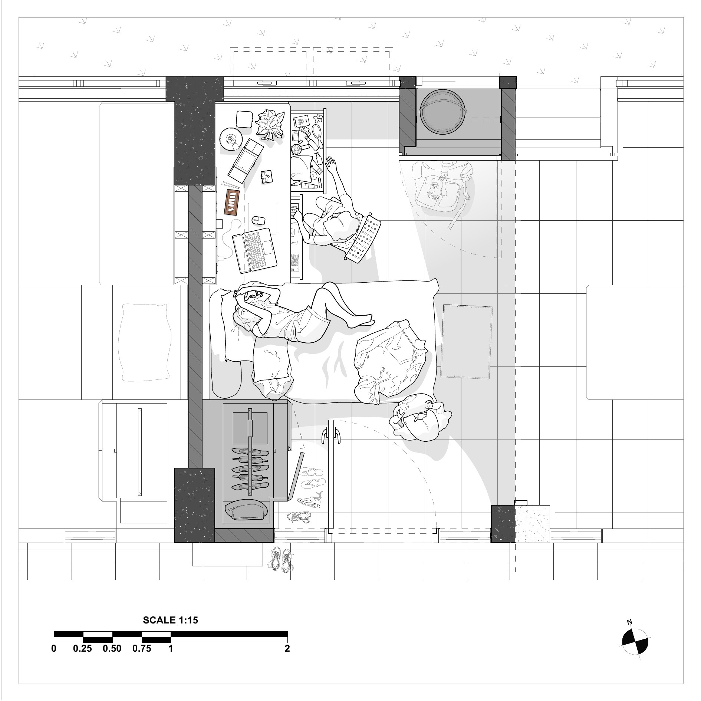

Academic Project
A Day in My Room
LocationSingapore University of Technology and Design
ToolsRhino
Project Description
A Day in My Room presents a floor plan of my hostel room at SUTD, documenting the everyday activities, routines, and objects that define the space. Rather than representing the room as a static arrangement, the drawing captures how it is occupied and experienced throughout daily life.
The project explores line-weight hierarchy as a method of organising architectural information. Structural elements, furniture, personal objects, and smaller details are represented using different line weights to establish visual depth, clarity, and emphasis.

Animated Study